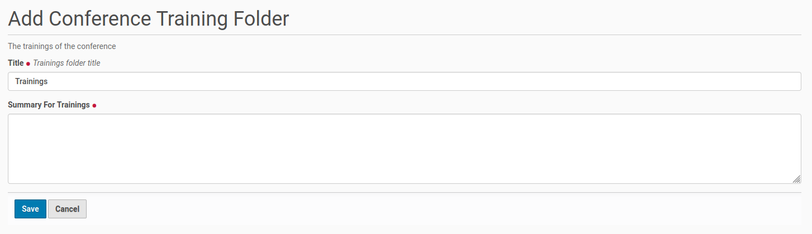
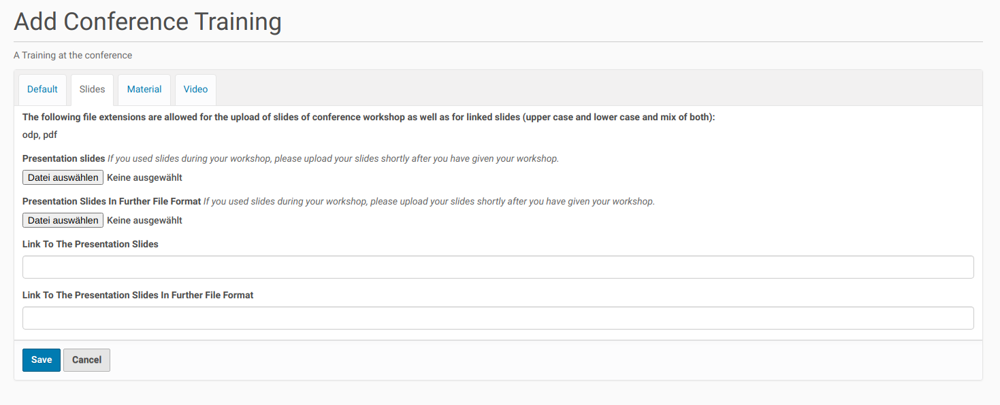
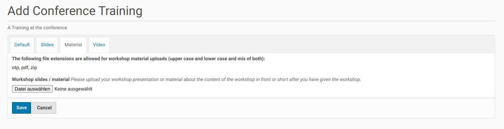
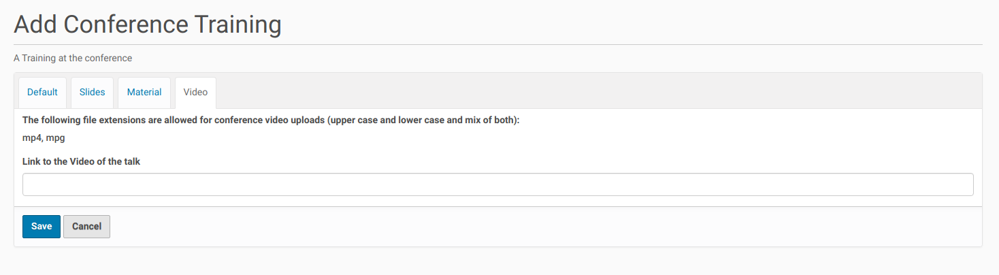

Training¶
This page describes how you could add training sessions to your conference. First you need to create a folder for this trainings. This will be described in the next sub-chapter. Once you created the folder you could add trainings to this folder.
Folder for Trainings¶
If you want to create a folder for the conference trainings, go to the root of your Plone conference site and click on the menu entry ‘Add new’ on the left side. Then select from the opening submenu the entry ‘Conference Training Folder’ and you get the edit form to create this folder (see screenshot below).
{kind=link}
This form contains a field for the title of the folder and for short description of the conference trainings. Both fields are mandatory.
Once you are finished with your edits save the form and the trainings folder will be created.
New Training¶
You could create new trainings only inside a folder for trainings. Thus you need to go to such folder (the one you already created before) and choose from the menu on the left site ‘Add new’. The opening sub-menu contains one entry: ‘Conference Training’. Click on this entry and you’ll get the edit form to create a new conference training.
This edit form covers four register. The first one (‘Default’), covers fields for the title of the training, a summary and detailed description. The user could also add the instructor(s) of the training (from a list of speakers, already created on the site), set the level and the audience of the training. She/he need also add a suggestion about the planed length of the training and the license the training and its files are submitted/ could be published.

At the bottom of the first register the user find a field to send some additional information to the program committee, e.g. about her/his availability.
The second to the fourth register covers fields to upload or link slides, material and videos of the training. The user get information about the allowed file formats for each upload / linking of files.
  {kind=link}
{kind=link}
{kind=link}
Once the user has finished the non-optional fields of the first register (‘Default’) she/he could save the form. This creates a new training (proposal) and submit it to the program committee for review.
Fields / Options For Reviewer / Program Owner¶
The edit form of a conference training covers some additonal fields for user with the permission to review trainings. This user group could edit the whole training edit form, but could also work on the additional fields, which are not even visible to the default user (owner of a training).
This additional fields covers the setting of the training length, the start and end time of a training and the room where it will take place.